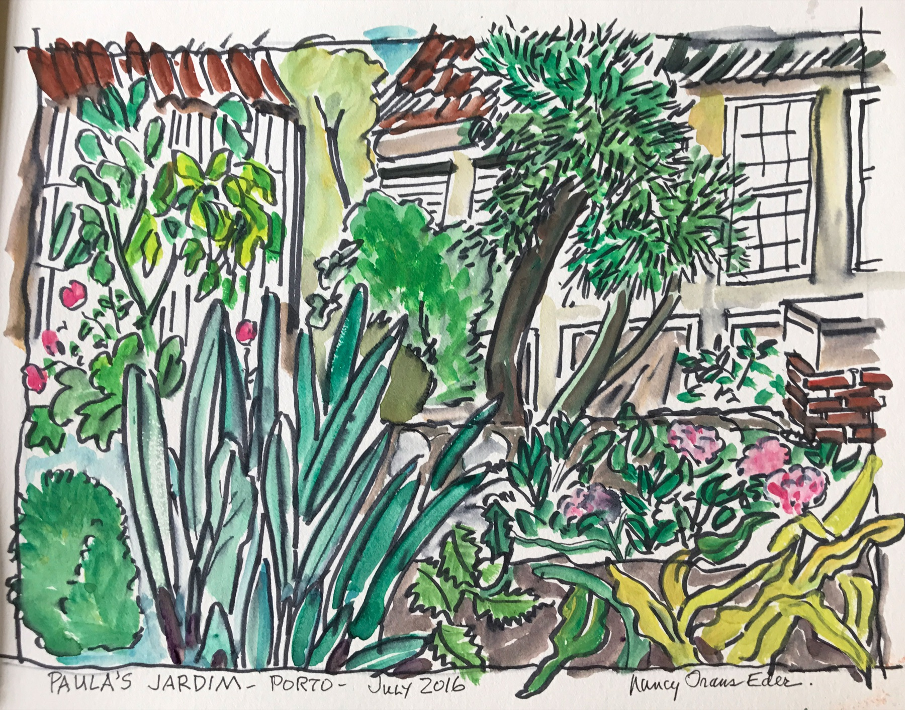

Nancy Eder
I paint where I am. A sketchbook, a pen and a small tin of watercolours are enough to hold a place for an hour — long enough to notice how the roofs stack up a hillside, how the sea changes colour past the harbour wall, how a courgette leaf is really a dozen greens.
The paintings on this site come from years of travelling sketchbooks: coast and countryside across Europe and the Caribbean, market stalls and gardens, boats and back streets. Each is drawn directly in ink, without pencil first, then washed with colour on the spot. Nothing is reworked later — what you see is what the day gave.
Works are sold as originals only. Every painting is signed and dated on the front and comes with a short note about where and when it was made.

Paula's Jardim
Porto, Portugal · July 2016
Ink and watercolour on paper, 12 × 16 in
View this paintingA different painting appears here each time you visit.
Shipping, framing & returns
Shipping
Original works ship unframed, flat between archival boards, in a rigid mailer — insured and tracked. Flat-rate shipping within the United States is $25; international shipping is quoted at checkout or on request. Orders are dispatched within 5 working days.
Framing
Paintings are on heavy sketchbook paper and sit well in a simple float mount behind UV-protective glass. Standard sizes are listed on each work so an off-the-shelf frame will usually do; framed delivery can be arranged for local collectors.
Returns
If a painting isn't right in the room, return it in its original packaging within 14 days of delivery for a full refund of the purchase price. Please email first so we can look out for it.